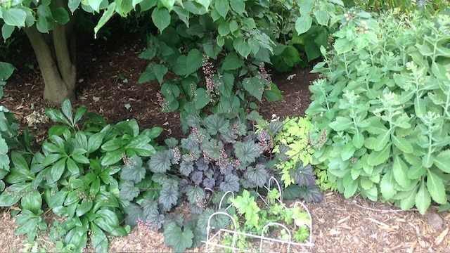

Carrot Top Pesto

Description
This is another recipe from Troy Farms. I'm intrigued by the idea of using carrot tops in a pesto.
This is yet another way of using up miscellaneous greens and scraps.
Ingredients
- 1 cup packed carrot top greens (about 40g), tough stems removed
- 1 cup packed baby spinach, kale, basil, or other greens
- 1 large clove garlic, roughly chopped
- 1/2 cup (63g) roasted unsalted cashews
- 1/2 teaspoon sea salt
- 1/4 teaspoon black pepper
- 1/2 cup (118ml) extra virgin olive oil
- lemon juice to taste
Directions
- Prep the carrot tops:
Rinse the carrot top greens to dislodge any dirt. Pick out and discard any dry, yellowed, or otherwise unappetizing looking leaves. Discard tough stems.
- Pulse greens, garlic, cashews, salt, pepper, and lemon juice in food processor:
Place the carrot tops greens, baby spinach, chopped garlic, roasted cashews, salt, and pepper in a food processor. Pulse several times. Scrape the sides down with a rubber spatula.
- Slowly add the olive oil:
While the food processor is running, slowly pour in the olive oil in a steady stream. Scrape the sides down with a rubber spatula. Pulse until smooth.
Home